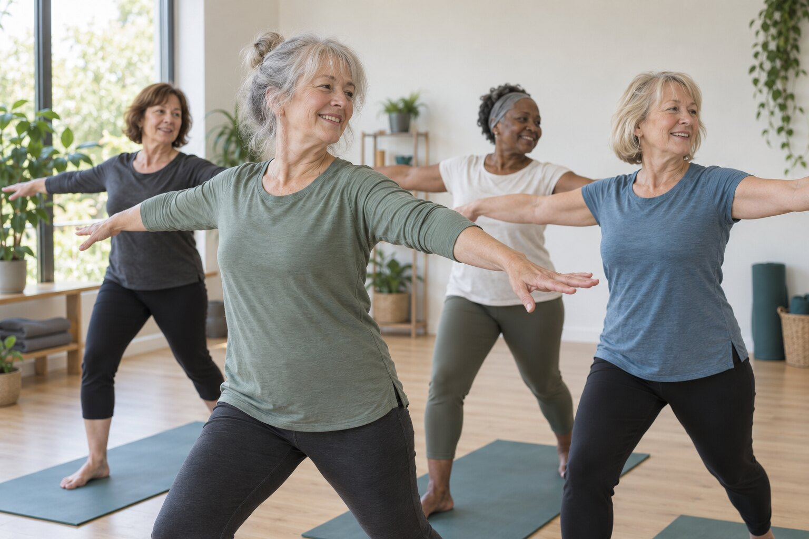
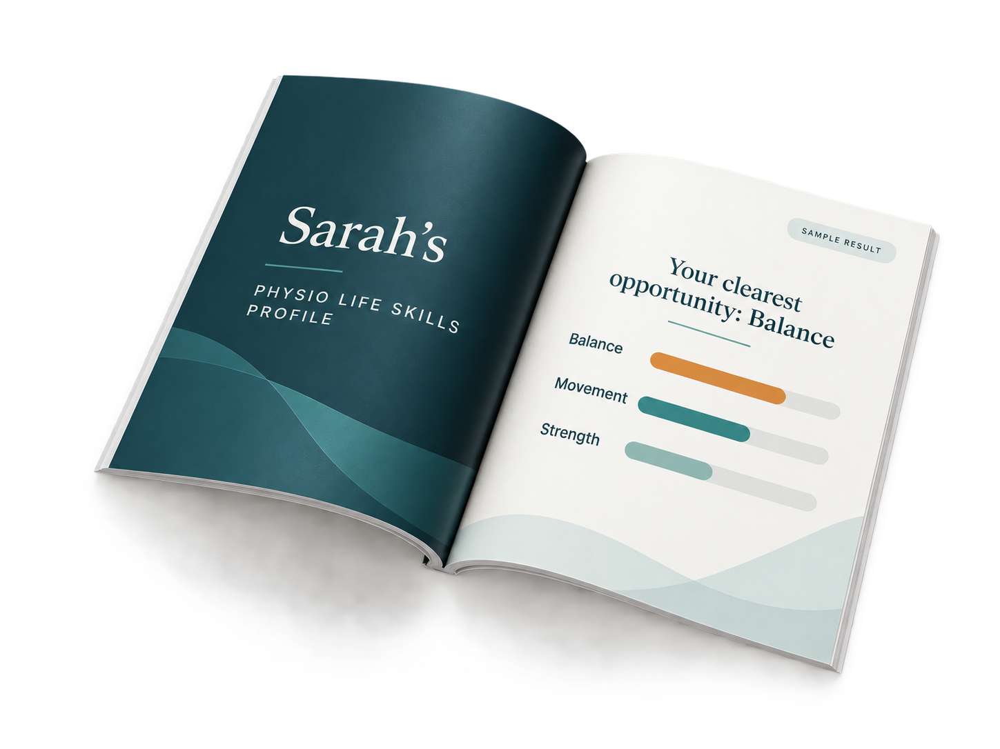
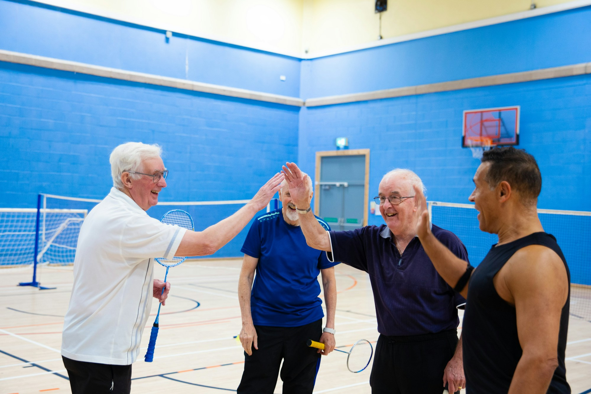

Strength
The force to rise, lift, climb, carry and keep doing things for yourself.
Physio Life Skills · Launching in 2027
I started Physio Life Skills because I kept meeting people who had gradually stopped doing things they enjoyed as their strength, balance or confidence changed. I want to help you understand what you can work on now, so you can stay active in the ways that matter to you as you get older.
I’m trialling the assessments carefully, with early access planned for 2027.
Why Physio Life Skills?
For nearly 30 years I’ve helped people recover from pain and injury. Along the way, I’ve also seen how easy it is to stop taking the stairs, walking with friends or getting down to play with grandchildren, one small compromise at a time.
Sometimes that change feels like an inevitable part of ageing. But strength, balance and movement are things we can explore and work on. Physio Life Skills is my way of making that process understandable: find out where you are, choose what matters to you and build from there.
It’s about keeping your options open, not chasing a perfect score.

Three physical life skills
The force to rise, lift, climb, carry and keep doing things for yourself.
The confidence and adaptability to stay steady—and respond when life unsettles you.
The options to reach, turn, react, kneel, change direction and get up from the floor.
Not sure where to begin?
Answer 12 short questions about everyday life and see whether Balance, Movement or Strength may be the most useful area to focus on next.

An example of what you’ll receiveThe Physio Life Skills approach
An assessment is only worthwhile if the results make sense and lead to something you can actually do.
Establish where you are now using meaningful, appropriate physical measures.
See what the results mean for your goals, confidence and everyday activities.
Focus on a small number of priorities through a clear personal programme.
Measure change, recognise progress and decide what would help you next.

The reason behind the measures
A walk with friends. A game you love. A trip you don’t want to miss. Those are the things the assessments are designed to support.
Assessments in development
Strength, Balance and Movement assessments are being developed and trialled before early-access appointments open in 2027. Each will combine clinical understanding with meaningful measures, a clear explanation and practical next steps.
For adults who want to understand their current strength and preserve the physical reserve needed for independence, activity and healthy ageing.
Early access opening in 2027For people who feel less steady, have fallen, have lost confidence or want to understand and improve their balance before it becomes limiting.
Early access opening in 2027For people who want everyday movements—turning, reaching, kneeling, stepping and getting up from the floor—to remain available and confident.
Early access opening in 2027Is it for me?
✓You want to invest in your future health and independence.
✓You have noticed a change in strength, balance or confidence.
✓You want useful measures—not a generic score.
✓You would value a clear plan shaped around your life.
Early access · 2027
Join the priority list to hear when carefully limited pilot and early-access appointments become available. There is no obligation to book.
Join the priority list → For now, this opens your email app so you can ask to join. Automated signup will be added when Kit is connected.Receive practical notes from Justin about strength, balance, movement and staying active. This is a separate choice from the priority list.
Receive Physio Life Skills emails →Useful answers
It is led by the same clinical reasoning, but the starting point is different. Physiotherapy often begins with pain or injury. Physio Life Skills begins with the physical qualities you want to understand, preserve or develop.
No. The assessment meets you where you are. It is not a competition and the purpose is not to compare you with the person beside you.
Early-access appointments are planned for 2027 after the assessments have been carefully trialled. Join the priority list to hear when the first appointments become available.
Start where you are
Physio Life Skills is being carefully developed for early access in 2027 at Glasshouse Studios in Fordingbridge.
Join the priority list ↑ Create my profile → Map, parking & directions →